<!--
  Generated template for the PromotionPage page.

  See http://ionicframework.com/docs/components/#navigation for more info on
  Ionic pages and navigation.
-->
<ion-header>

  </ion-header>
  
  <ion-content padding class="vegetarian-bg" style="overflow-y: hidden;">
  <br>
      
      <div *ngFor="let vegetarian of vegetarians; last as isLast">
        <h1 style="text-align: center;">
          
          
          
          {{vegetarian.$key}}
        </h1>
        <p style=" text-align: center;"><i >{{vegetarian.desc}}</i></p>
        <p style=" text-align: center;">{{vegetarian.desc2}}</p>
        <p style=" text-align: center; font-family: 'agency';">{{vegetarian.wine}}</p>
        
      </div>
        <br>
        <br>
        <h1 style="text-align: center;">3-course set 2,300</h1>
        <h1 style="text-align: center;">4-course set 3,200</h1>
        
          
  </ion-content>
  
  